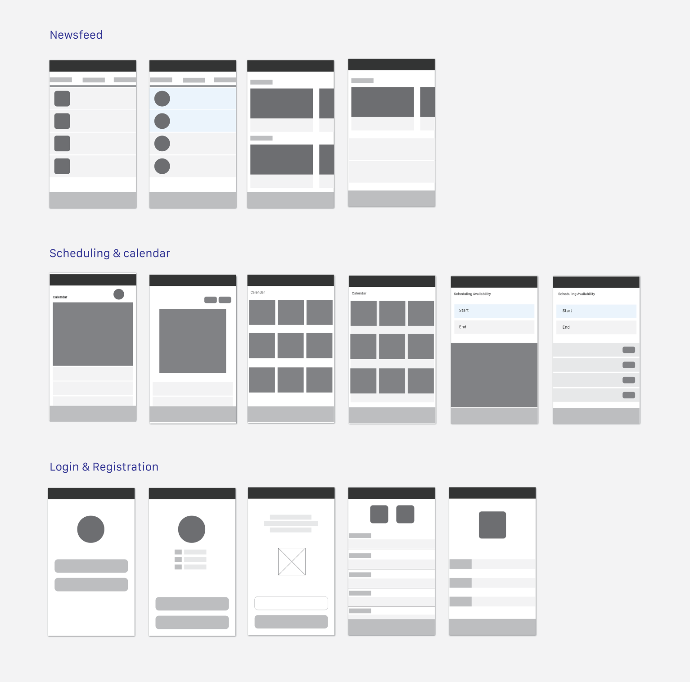
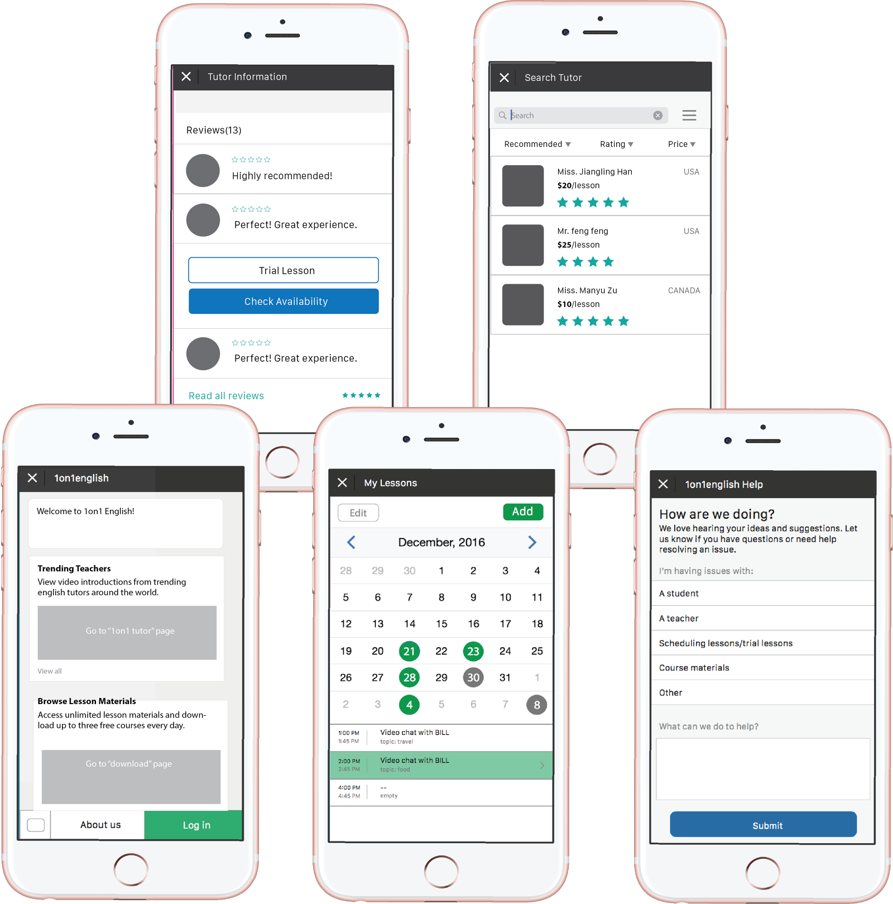

WeChat Extension
Contract Designer, Winter 2016/2017
1on1English is a WeChat page that connects and schedules chat sessions between Chinese students to native English tutors.

I spent the Winter of 2016 working on the Product team at Uniware HQ in Beijing. During my time abroad, I cleaned up the calendar/scheduling flow, and researched a design spec for a future implementation of a future UI framework, currently constructed around Taobao's open source API. The product had just been launched as "Official Account" extention on WeChat. Along the way, I was able to access and analyzed UI patterns across native Chinese applications.
The goal of creating a product like this one is to put tools in the hands of teachers and students who will create their own value propositions based on it. Registered users can find each other to start conversations, manage personal payments, and schedule sessions that work with time differences.

Surfacing Activity
Here are a range of ways to surface features across different pages. In creating a uniform framework for organizing UI elements already implemented, I diagramed variations of layouts for the main activity screens that overlap the tutor and student internal portals to guide my design process.
While I familiarized myself with the product, I noted initial impressions, reactions to the existing user experience, and questions. These notes quickly translated into a document detailing existing design conventions and patterns across the product, including comparative hypotheses of how users interact and engage with native Chinese applications verses US apps. More on this later!


Scheduling
Syncronizing people's schedules was the next challenge. We need to minimize on undesirable missed lesson opportunities between different time zones, while allowing both parties the options to chose. The solution was to add prompts that will auto-schedule a time where both people are available, then pass on the options for the tutor and student to select from and confirm.
The "scheduling lessons" flow and "add to calender" task screen were seperate, and underutilized in both engaging actionable feedback, and building rapport early on. As a test user, it was diffucult to and understand the possibilities of the scheduler based on the existing UX.

Time Zone & Calendar
The scheduler tool and calendar is now linked to one screen. Tutors can indicate their availability on their calendar, where the times of mutal availability can be seen by students. All booked lessons will then be automatically added to your calendar. Reminder notifications will be sent accordingly.

Implementation
Above are the mains screens based on our final design framework. The product is currently in its testing stages while the mechanics and code are being cleaned up. Everything viewable by non-registered users are public.